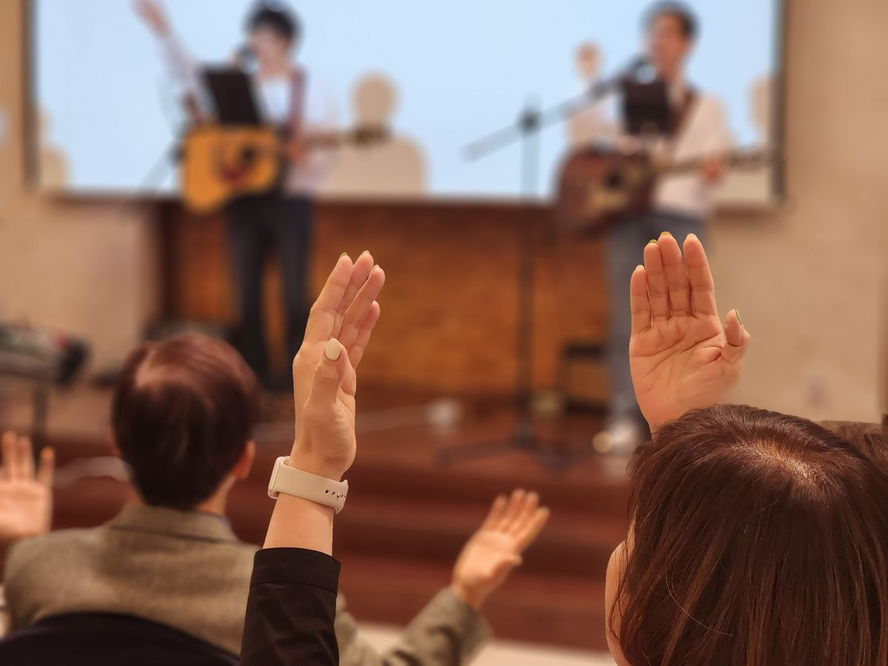
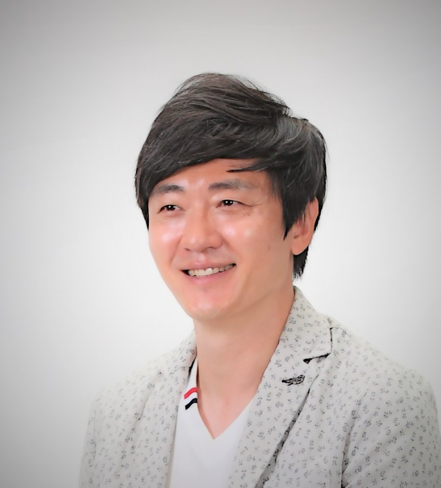
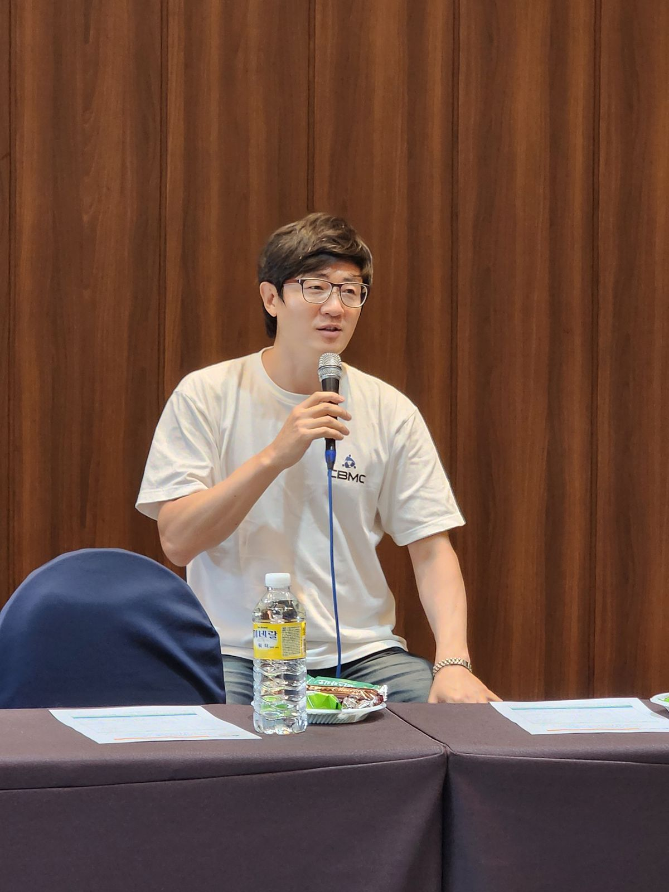
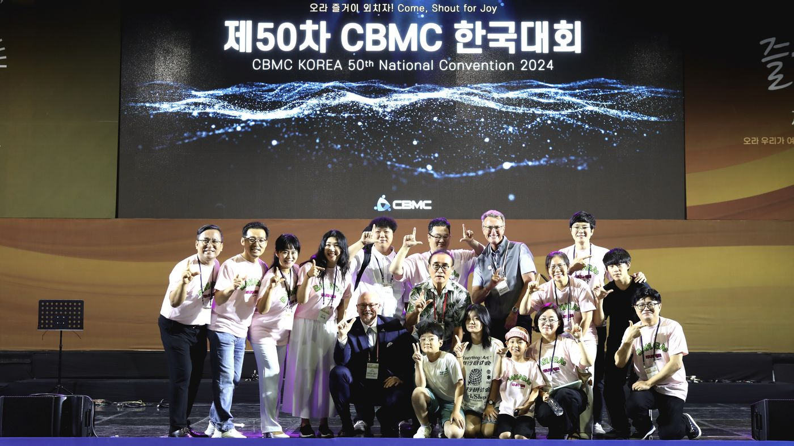
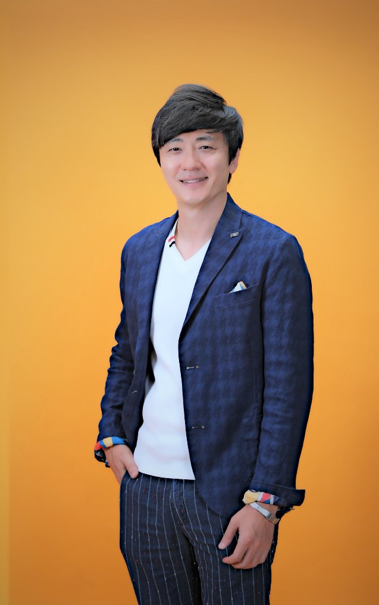
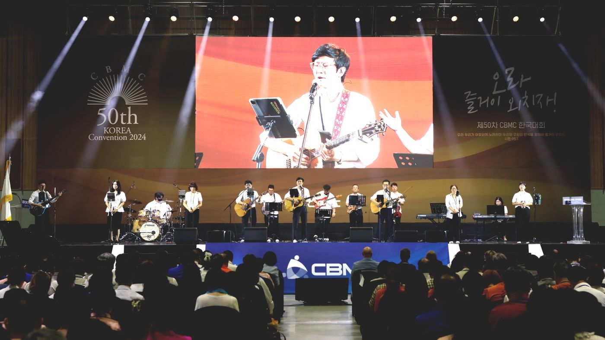
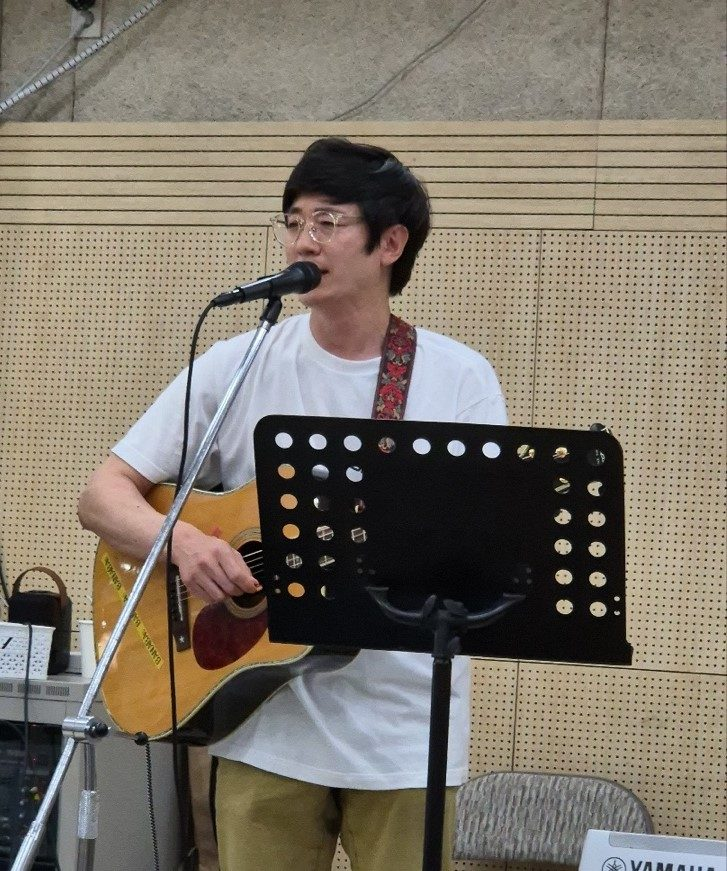
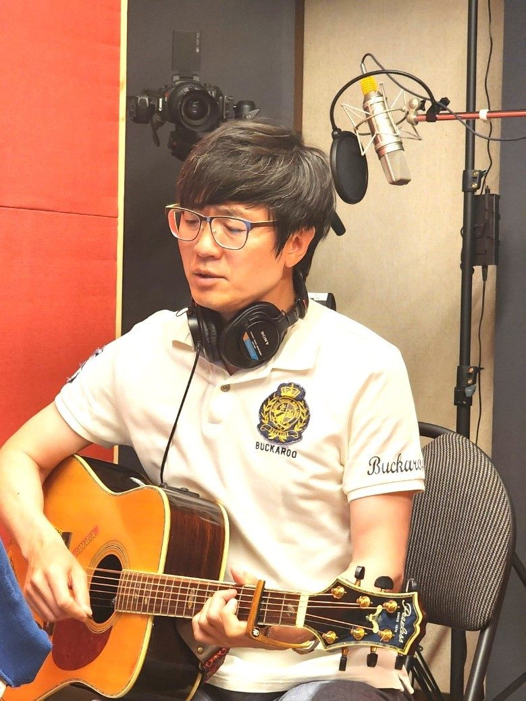
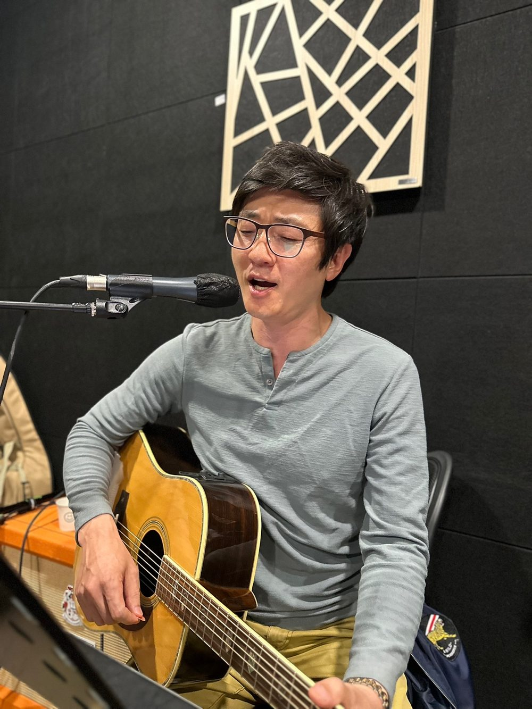

받은 은혜가 고이지 않고 흐르기를 원합니다. 남은 길을 산 제사로 드립니다.May the grace I received never pool, but flow onward. The road ahead I offer as a living sacrifice.
경영학, 인문학, 신학 세 렌즈로 일터와 교회를 섬깁니다. 찬양과 말씀, 코칭과 컨설팅, 그리고 저술의 자리에서.Serving the workplace and the church through three lenses: business, the humanities, and theology. In worship and the Word, in coaching and consulting, and in writing.
내가 주는 물을 마시는 자는 영원히 목마르지 아니하리니, 내가 주는 물은 그 속에서 영생하도록 솟아나는 샘물이 되리라.Whosoever drinketh of the water that I shall give him shall never thirst; but the water that I shall give him shall be in him a well of water springing up into everlasting life.
JOHN 4 : 14
THE WAY
걸어온 길The Path I Have Walked
자랑할 것이 없는 인생입니다. 다만 인도하신 흔적을 그대로 적습니다.There is nothing here to boast of. I simply set down the traces of His leading.
열아홉, 그 부르심Nineteen, and a Calling
불교 집안에서 태어나서 교회 문턱을 넘어 보지 못했습니다. 크신 하나님의 은혜로 19세 때 친구의 전도로 교회 수련회에 초청을 받았고 하나님을 만나게 되었습니다. 마치 바로처럼 부모님의 마음이 격동케 되어 약 10년간의 핍박의 시련도 있었습니다. 당시 평생 흘릴 눈물을 모두 흘린 것 같습니다.I was born into a Buddhist family and had never once crossed the threshold of a church. By God's great grace, at the age of nineteen a friend invited me to a church retreat, and there I met God. Like Pharaoh, my parents' hearts were stirred against it, and there followed some ten years of persecution. I think I shed in those years all the tears a lifetime holds.
집안 구원을 위해 기도하면서, 가정에 복음이 들어간다면 하나님께 드리는 인생을 살겠다고 서원하기도 했습니다.Praying for the salvation of my family, I made a vow: if the gospel ever entered our home, I would live my life as an offering to God.
가정에 임한 구원Salvation Comes Home
어머니의 사업 실패, 건강 악화 등의 계기로 마음이 가난해지셨고, 교회도 나오시고 큰 치유의 은혜도 입게 되셨습니다. 권사님, 장로님이 되셔서 과거 큰 핍박자에서 든든한 기도의 후원자가 되셨습니다. 부모님의 구원의 감격으로, 하나님이 살아 계시고 기도에 응답하신다는 명확한 증거를 주셨습니다.Through my mother’s business failure and failing health, her heart grew poor. She began to come to church and received the grace of deep healing. My parents, once the fiercest opponents, took their place among the leaders of the church and became steadfast supporters in prayer. Their salvation was clear evidence to me that God is alive and answers prayer.
사람 막대기와 인생 채찍The Rod of Men, the Stripes of Life
적지 않은 핍박의 시기, 다섯 번의 질병, 두 번의 사고 등으로 마음이 강퍅하고 교만한 인생을 겸손히 낮추셨습니다. 직장 생활, 사업의 자리, 인생의 여정 속에서 사람 막대기와 인생 채찍을 경험케 하셨습니다. 어떻게 세상 한복판에서 어떤 삶을 살아야 하는지, 깊은 성찰의 시기이기도 했습니다.A long season of persecution, five illnesses, two accidents. Through them He humbled a hard and proud life. In my working years, in business, along the road of life, He let me know the rod of men and the stripes of life. It was also a season of deep reflection on how one is to live in the middle of the world.
맡겨 주신 섬김의 자리The Places of Service Entrusted to Me
신앙 초기 다녔던 교회가 개척교회이다 보니, 다양한 사역들을 맡게 되는 은혜가 있었습니다. 찬양밴드, 성경 양육 및 제자훈련, 비정기적이지만 수요 강단에서 말씀을 섬기기도 했습니다. 이후 교회에서는 셀그룹 리더의 섬김을 오랫동안 하면서, 사역을 맡은 청지기의 삶과 하나님의 동역자로서 한 영혼이 돌아오는 천국 잔치의 감격을 누리는 시간이었습니다.Because the church of my early faith was a church plant, I was given the grace of many kinds of service: the worship band, Bible study and discipleship, and now and then the Wednesday pulpit. In the churches that followed I served long as a cell group leader, living as a steward entrusted with ministry and sharing the joy of heaven’s feast whenever one soul came home.
우는 자와 함께 울라. 내 백성을 위로하라.Weep with those who weep. Comfort my people.그 음성에 순종하여, 부르심이 있는 전국의 자리를 찾아다니며 섬기고 있습니다.In obedience to that voice, I go wherever the calling leads, across the country.

부르심이 있는 자리마다 찾아가 함께 찬양합니다.Wherever the calling leads, we lift our voices together.
이후 장로님의 콜링이 있었고, 기도하던 중에 인도하심을 좇아 옮기게 되었고 찬양밴드로 섬기고 있습니다. 거부할 수 없는 이끄심으로 목회학 석사의 길을 걸었고, 여러 일들과 섬김의 짐 속에 허덕이긴 하지만 이후 하반기 사역을 위해 준비케 하시는 뜻에 순종함으로 임하고 있습니다. 최근에는 지역 경영인들을 구체적으로 섬기는 지회 섬김이로도 부르심을 받고 섬기고 있습니다.Later came an elder’s calling, and while praying I followed His leading and moved, and there I serve with the worship band. Under a leading I could not refuse, I walked the road of the Master of Divinity. Though I stagger under the weight of many tasks and callings, I go on in obedience, trusting that He is preparing me for the second half of the work. More recently I have been called to serve as a chapter servant leader among business leaders in my region.
부족한 인생을 돌아보시고 지금까지 인도해 주신 하나님의 크신 은혜와 돌보심에 감사와 영광을 돌려 드립니다.To God, who looked upon a small life and has led me until now, I return all thanks and glory for His great grace and His care.

정병현Brian Chong경영학, 인문학, 신학 세 렌즈로 일터와 교회를 섬깁니다. 광야밴드를 인도하며 부르심이 있는 자리를 찾아다닙니다.Serving the workplace and the church through three lenses: business, the humanities, and theology. He leads the Gwangya Band and goes wherever the calling leads.
MINISTRY
다섯 갈래, 한 부르심Five Streams, One Calling
경영학, 인문학, 신학이라는 세 렌즈로 일터와 교회를 섬깁니다.Serving the workplace and the church through three lenses: business, the humanities, and theology.
찬양사역Worship Ministry
광야밴드 인도자Leader, Gwangya Band
개척교회 찬양팀에서 시작해 지금까지 이어진 자리입니다. 광야밴드를 인도하며, 부르심이 있는 전국 각처를 찾아가 찬양으로 위로하는 일을 합니다.It began with the worship team of a church plant and has continued ever since. I lead the Gwangya Band and travel wherever the calling leads, bringing comfort through worship.
교회 예배 및 특별 집회 찬양 인도Worship leading for services and special gatherings
기독경영인 모임, 직장인 예배 찬양Worship for business gatherings and workplace services
위로가 필요한 현장을 찾아가는 방문 사역Visits to places where comfort is needed

말씀사역Preaching and Teaching
양육 ·제자훈련 ·강단Discipleship · Teaching · Pulpit
개척교회 수요 강단을 섬겼고, 성경 양육과 제자훈련을 인도했습니다. 목회학 석사를 통해 신학적 기초를 다지며, 회중 참여예배에 관한 연구를 신학 학회에 게재하기도 했습니다.I served the Wednesday pulpit of a church plant and led Bible study and discipleship. The Master of Divinity gave me a theological foundation, and my study on congregational participatory worship was published in a theological journal.
소그룹 성경공부 및 제자훈련 인도Small group Bible study and discipleship
직장인 예배, 기독경영인 모임 말씀Messages for workplace services and business gatherings
수요 예배 및 특별 집회 강단Wednesday services and special meetings

기독경영인 코칭사역Coaching Christian Business Leaders
세 렌즈 코칭Three-lens coaching
일터의 자리에 있는 분들이 맡겨진 일을 성경적으로 성취하도록 조력합니다. 기독경영인 모임 지회 섬김이로 현장에서 만나고 있으며, 아둘람 스콜레 건립위원회 섬김이로도 참여하고 있습니다.I help those who stand in places of work to fulfil biblically what has been entrusted to them. I meet them in the field as a chapter servant leader, and I serve on the founding committee of Adullam Schole.
소명과 직업, 일의 신학Calling, vocation, and the theology of work
의사결정의 기준과 분별Standards for decision and discernment
관계, 설득, 사람을 얻는 일Relationship, persuasion, and winning people
위기의 경영과 내려놓음Managing through crisis, and letting go

기업컨설팅사역Consulting as Service
28년의 현장28 years in the field
컨설팅을 직업이 아니라 맡겨진 도구로 이해합니다. 기업의 대표가 밤에 잠들지 못하는 문제 앞에 함께 앉는 일이 곧 섬김이라고 믿습니다.I understand consulting not as a profession but as a tool entrusted to me. To sit beside an owner facing the problem that keeps him awake at night is itself service.
받은 것을 글로 남겨 나누는 일입니다. 설득과 소통을 다룬 저서 세 권을 썼고, 경영과 신학 양쪽에서 연구를 이어가고 있습니다.It is the work of leaving in writing what I have received. I have written three books on persuasion and communication, and I continue research in both business and theology.
설득과 소통 분야 저서 3권Three books on persuasion and communication
경영학 및 신학 학술 논문Academic papers in business and in theology
기독경영인을 위한 저술 준비Writing in preparation for Christian business leaders
SCENE
사역의 현장Where the Work Happens
부르심이 있는 자리마다 찾아가 함께 찬양하고, 함께 울고, 함께 기도했습니다.Wherever the calling led, we sang together, wept together, and prayed together.

기독경영인 대회 찬양 인도Leading worship at a national convention녹음실에서In the recording studio손을 들고 함께 드리는 예배Hands raised together in worship광야밴드Gwangya Band

찬양의 자리A place of worship무대 뒤에서 바라본 회중The congregation, seen from the stage모임의 첫 순서, 찬양Worship, the first order of every gathering

준비하는 시간Time to prepare지회 모임 찬양Worship at a chapter meeting함께 부르는 노래Singing together

연습실에서In the practice room집회의 자리At the gathering
INTEREST
관심분야Areas of Focus
지금 마음을 쏟고 있는 자리들입니다.The places my heart is set on now.
기독경영인 코칭Coaching Christian Business Leaders
일터의 자리에 있는 분들을 성경적으로 조력하는 일. 세 렌즈를 통해 지혜와 기법과 통찰을 함께 나눕니다.Helping those in the workplace in a biblical way, sharing wisdom, method, and insight through the three lenses.
저술과 연구Writing and Research
더 깊은 묵상과 연구를 통해 다양한 저술을 산출하는 일. 신학 학회 논문 게재도 같은 맥락입니다.Producing writings out of deeper meditation and study. Publishing in theological journals belongs to the same line.
찬양과 예배Worship
회중이 참여하는 예배의 회복. 현장의 찬양 인도와 그 신학적 정당성 연구를 함께 이어갑니다.The recovery of congregational participation in worship, carried on both in leading and in theological study.
문학과 예술Literature and Art
받은 은사를 따라 문학과 예술의 자리에서도 드려지기를 원하는 소원이 있습니다.A desire to be offered also in the places of literature and art, according to the gifts received.
VISION
드려지는 세 가지Three Things I Offer
마음속에 정리된 비전입니다.The vision settled in my heart.
I여러 일터의 자리에 있는 분들을 섬기는 일입니다. 특히 경영학, 인문학, 신학 세 가지 렌즈를 통해, 주신 일들을 성경적으로 성취하는 데 조력하는 것입니다.To serve those who stand in places of work. Especially, through the three lenses of business, the humanities, and theology, to help them fulfil biblically the work they have been given.
II그러기 위해 더 깊은 묵상과 연구들을 통해 다양한 저술들을 산출하고자 합니다.And to that end, to produce writings out of deeper meditation and study.
III여러 은사와 부르심을 좇아 더 힘있게 드려지며 쓰임받고자 합니다.To be offered more fully and to be used, following the gifts and the calling given to me.
찬양으로, 말씀으로, 저술로, 교육으로. 인도하심에 순종하며 산 제사로 드려지기를 원합니다.In worship, in the Word, in writing, in teaching. Walking in obedience to His leading, I long to be offered as a living sacrifice.
RECORD
이력과 저술Background and Writings
걸어온 자리와 남긴 글입니다.The places I have been and the words I have left.
학력Education
Ph.D.(경영학박사)Ph.D. in Business Administration서울과학종합대학원대학교 ·경영전략Seoul School of Integrated Sciences and Technologies · Business Strategy
MBAMBAHelsinki School of Economics ·International ManagementHelsinki School of Economics · International Management
목회학석사Master of Divinity아신대학교Asia United Theological University
경력Career
연구교수Research ProfessorIPS 산업정책연구원IPS, Institute for Industrial Policy Studies
컨설턴트ConsultantLG CNSLG CNS
경영컨설팅 및 기업 자문 28년28 years in consulting and corporate advisory영업 ·세무 ·인수합병 ·벤처 자문Sales · Tax · M&A · Venture advisory
신앙 경력Church Service
개척교회Church plant수요 강단 ·성경 양육 및 제자훈련 ·찬양Wednesday pulpit · Bible study and discipleship · Worship
지회 섬김이Chapter servant leader지역 경영인 섬김Serving business leaders in the region
저서Books
심금술Simgeumsul: The Art of Touching HeartsNPBR
설득술 핵심기법Persuasion: Core TechniquesNPBR
설득술 고급기법Persuasion: Advanced TechniquesNPBR
학술 논문Academic Papers
한국교회 회중 참여예배의 성경적, 신학적, 역사적 정당성 연구A Study on the Biblical, Theological, and Historical Legitimacy of Congregational Participatory Worship in the Korean Church신학과 사회Theology and Society
혁신기반 신제품개발을 통한 글로벌 시장 개척Opening Global Markets through Innovation-Based New Product Development메커니즘학회Mechanism Society
시장 지향 K-Food 신제품 개발 전략Market-Oriented New Product Development Strategy for K-Food한국경영학회Korean Academy of Management
시스템 다이내믹스 기반 스타트업 신제품개선System Dynamics-Based New Product Improvement for Startups한국시스템다이내믹스연구Korean System Dynamics Review
Generative AI: A Chronological ReviewAPJCRI
CONTACT
함께할 자리가 있다면If There Is a Place to Serve
찬양, 말씀, 코칭으로 섬길 자리가 있다면 언제든 연락 주십시오.If there is a place to serve in worship, in the Word, or in coaching, please reach out anytime.
초청을 문의하실 때 모임의 성격과 인원, 희망하시는 날짜를 함께 알려 주시면 기도하며 답을 드리겠습니다.When you write, please include the nature and size of the gathering and the dates you have in mind, and I will pray and reply.